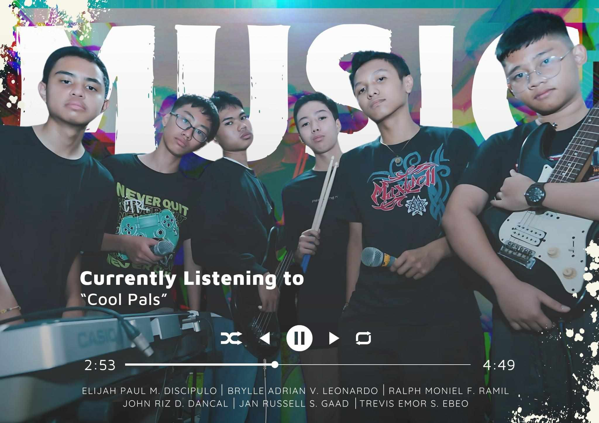
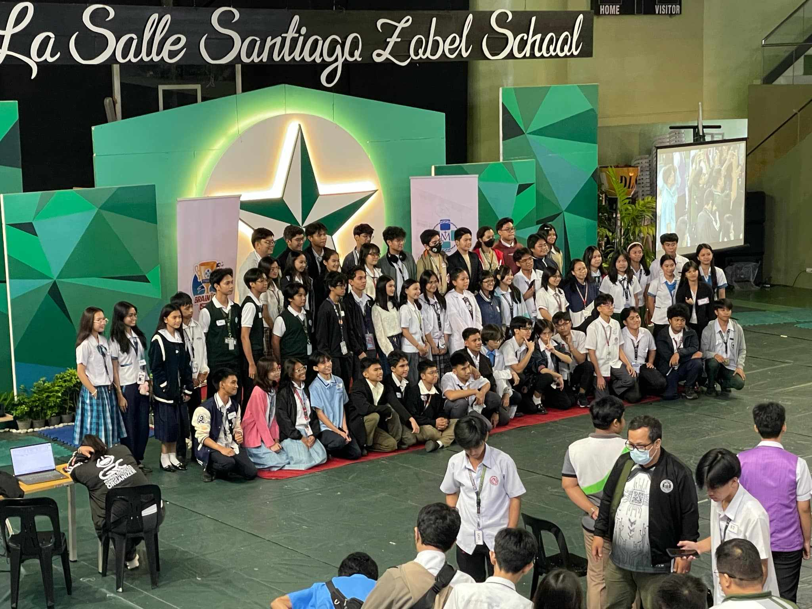
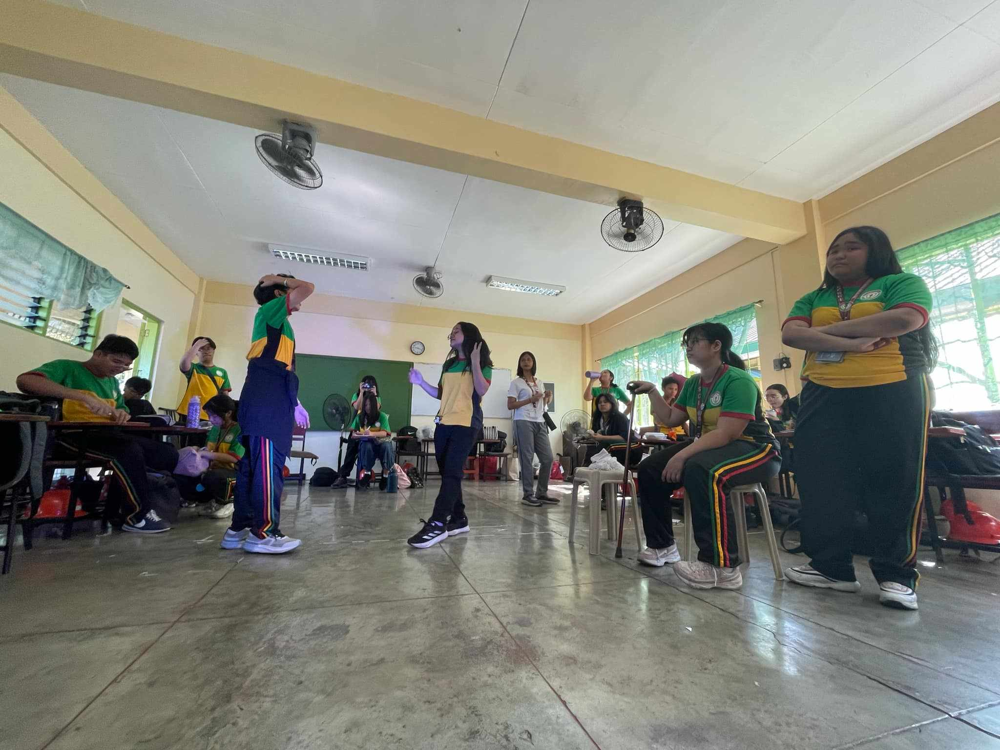
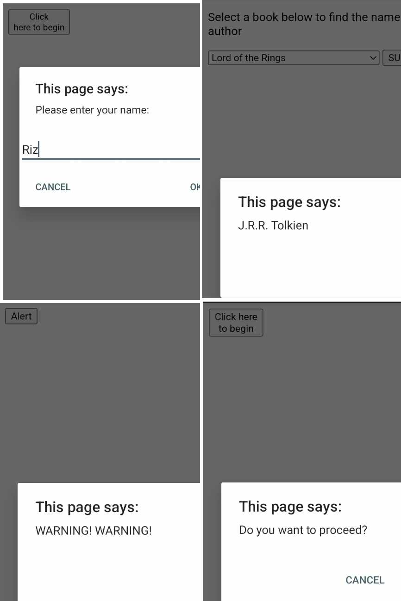

If you want to see my previous portfolios, click here.
- Following events were attended by the student
We, the Cool Pals, competed in the Battle of the Bands last February 22, 2025. I was the bassist of the band. Truly, it was a great experience for us. We hope to compete again next year. We will become better and stronger. 💪
Credits to Russell's Father and Brylle's Relative
The Research Team #2 competed in the Research Fair at De La Salle Santiago Zobel last March 8, 2025. They secured 5th place for the Best Board Display. They would like to thank Ms. Cza for the help in making their poster. 😁
Credits to Trevis Ebeo for the Picture
The Fairness prepared a One Act Musical play that will be held on March 17, 2025. Watch us as we bring the story of a hidden relationship between two girls in real life. 👀
Credits to Trevis Ebeo for the Picture
Some sample Browser Outputs of Week 1-3
Lesson 4 will be presented on Monday 😁. Good luck po sa observation 💪🤞.
I would like to thank first of all our Almighty Jesus for helping me throughout this school year. To my family, friends, teachers, classmates, everyone who supported me, to my seniors from Grade 12, 11, Commitment to Imaginative, to my supportive juniors, online or long-distance friends, and of course to the girl who helped me through my ups and downs, Apple, this A.Y. '24 - '25. Truly, this year is full of blessings and learning experiences.
I will always remember the kulitans, asarans, and sermons in our ICT class. The lessons I didn't get, the hands-ons that I always failed, but still, I learned a lot not just in the subject itself but also the application of it in real life.
I have nothing to say anymore, my smile and jokes every discussion show how much I am grateful to have Miss Uminga as our ICT teacher. God bless you po Miss, see you po when I see you :)).